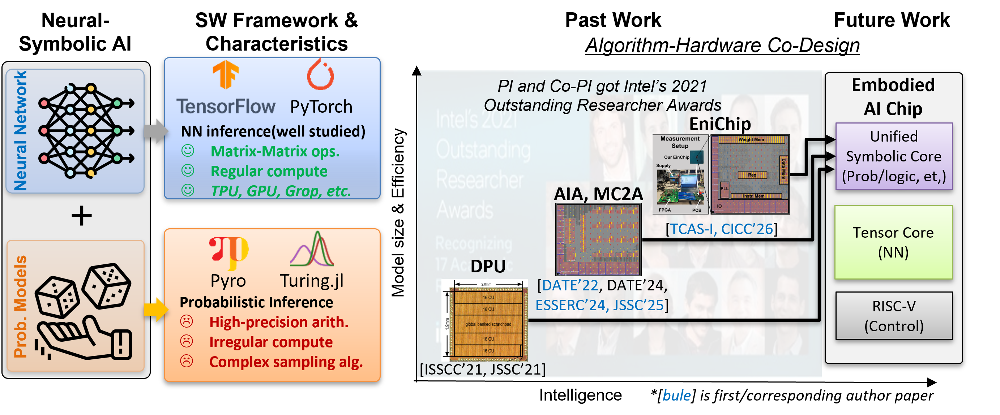

AI Hardware Architect | Probabilistic & Neuro-Symbolic Computing
I design energy-efficient hardware architectures for uncertainty-aware AI, bridging algorithm-architecture co-design for exact inference, sampling-based approximate inference, mixed-precision log-domain computation, and RISC-V-based programmable accelerators.

I'm an AI hardware architect and researcher focusing on probabilistic machine learning and neuro-symbolic computing. My work targets scalable, energy-efficient processors for trustworthy and interpretable AI under uncertainty.
I'm currently a Postdoctoral Researcher at FACT lab, HKUST, advised by Prof. Yuan Xie.
KU Leuven | Role: Chip Architect & Design Lead
KU Leuven | Role: Chip Architect & Design Lead
KU Leuven | Role: Chip Architect & Design Lead
Southern University of Science and Technology
Selected publications (from my Google Scholar profile).
Google ScholarL. Yao, Shirui Zhao, M. Trapp, J. Leslin, M. Verhelst and M. Andraud. IEEE Transactions on Circuits and Systems I: Regular Papers, 2025.
Shirui Zhao, N. Shah, W. Meert and M. Verhelst. IEEE Journal of Solid-State Circuits, 2025.
N. Shah, L. I. G. Olascoaga, Shirui Zhao, W. Meert and M. Verhelst. IEEE Journal of Solid-State Circuits, 2022.
H. Lyu, F. An, Shirui Zhao, W. Mao and H. Yu. IEEE Design & Test, 2022.
Shirui Zhao, N. Shah, W. Meert and M. Verhelst. IEEE European Solid-State Electronics Research Conference (ESSERC), 2024.
J. Crols, G. Paim, Shirui Zhao and M. Verhelst. Design, Automation & Test in Europe (DATE), 2024.
Shirui Zhao, N. Shah, W. Meert and M. Verhelst. Design, Automation & Test in Europe (DATE), 2022.
W. Mao, K. Li, X. Xie, Shirui Zhao, H. Li and H. Yu. Design, Automation & Test in Europe (DATE), 2021.
N. Shah, L. I. G. Olascoaga, Shirui Zhao, W. Meert and M. Verhelst. IEEE International Solid-State Circuits Conference (ISSCC), 2021.
Shirui Zhao, F. An and H. Yu. International Conference on Field-Programmable Technology (FPT), 2019.
(Add preprints here if you'd like – e.g., arXiv links.)
KU Leuven, 2020
Thesis: "Hardware Design for Probabilistic Computing: Paving the Way to Efficient Artificial General Intelligence"
University of Chinese Academy of Sciences, 2015
Northwestern Polytechnic University, 2012
shiruizhao.pro@gmail.com
Monday & Wednesday: 2:00-4:00 PM
Or by appointment